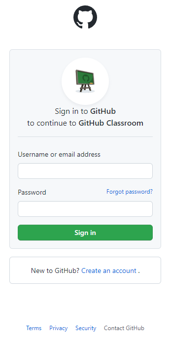
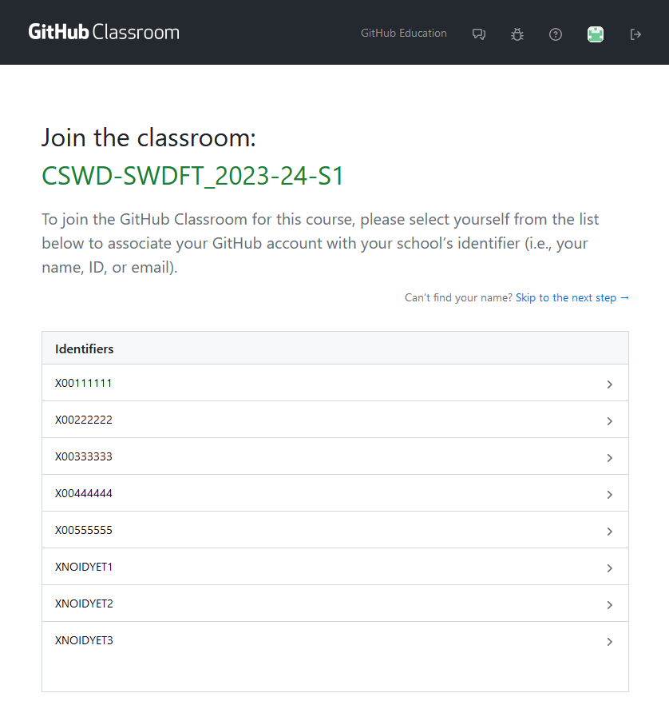
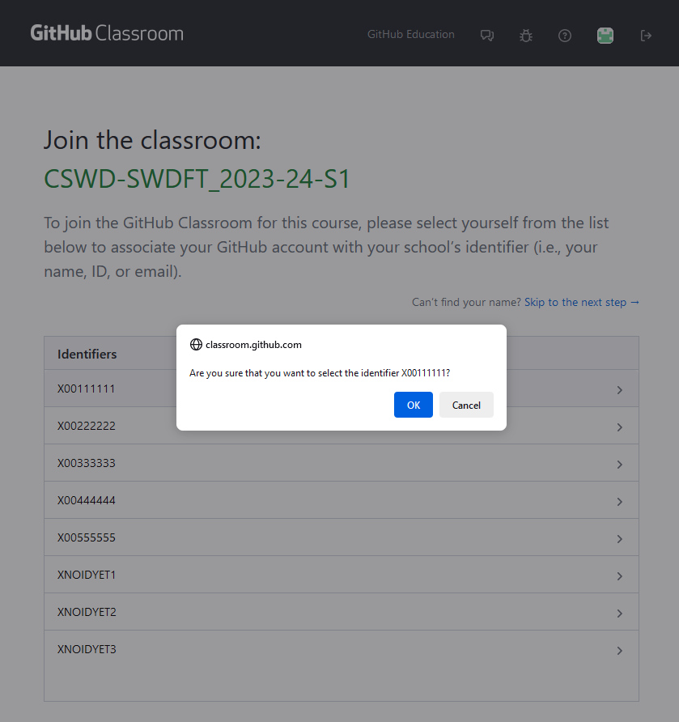
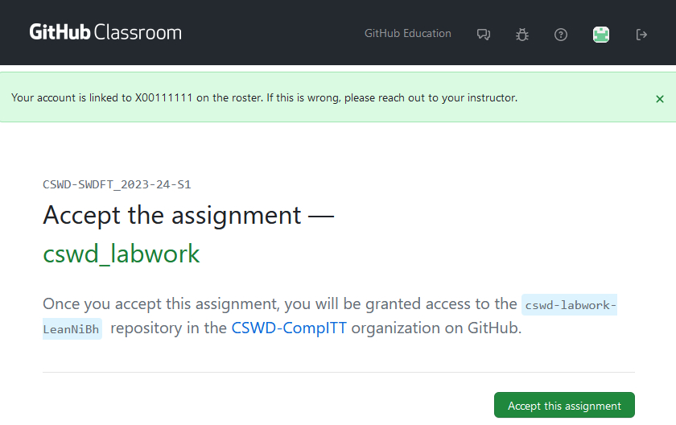
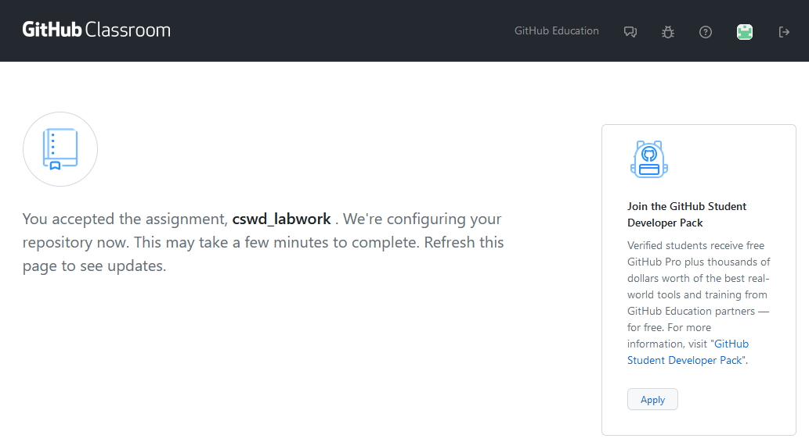
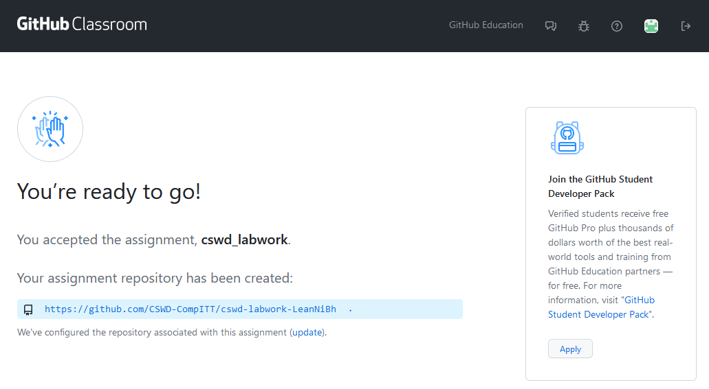
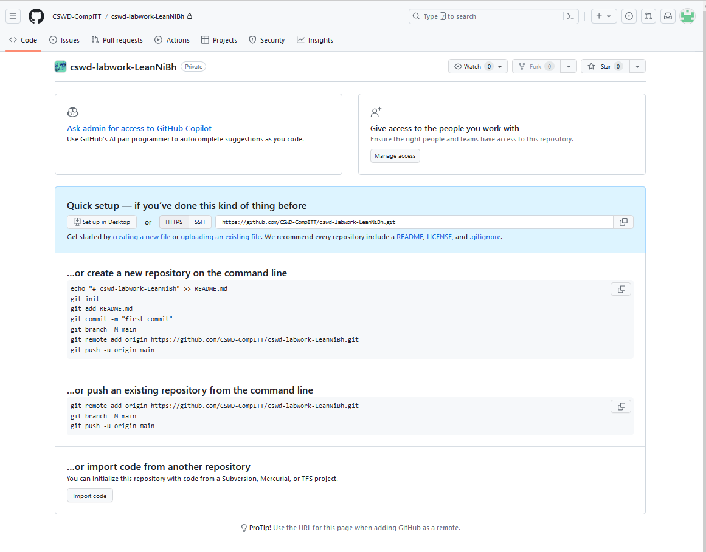
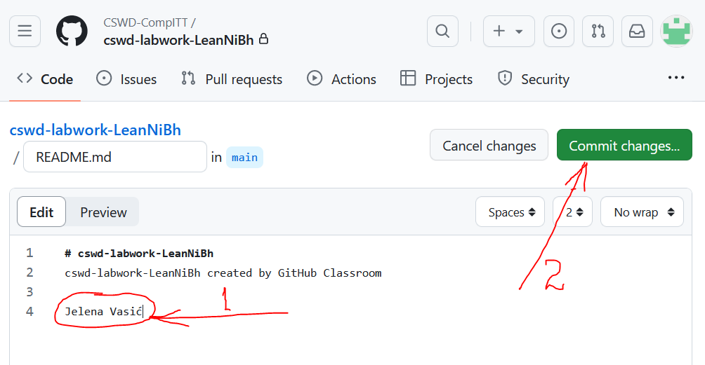
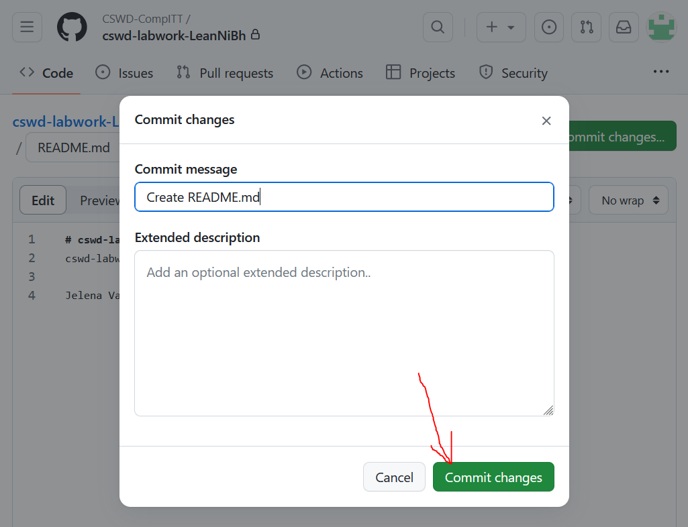
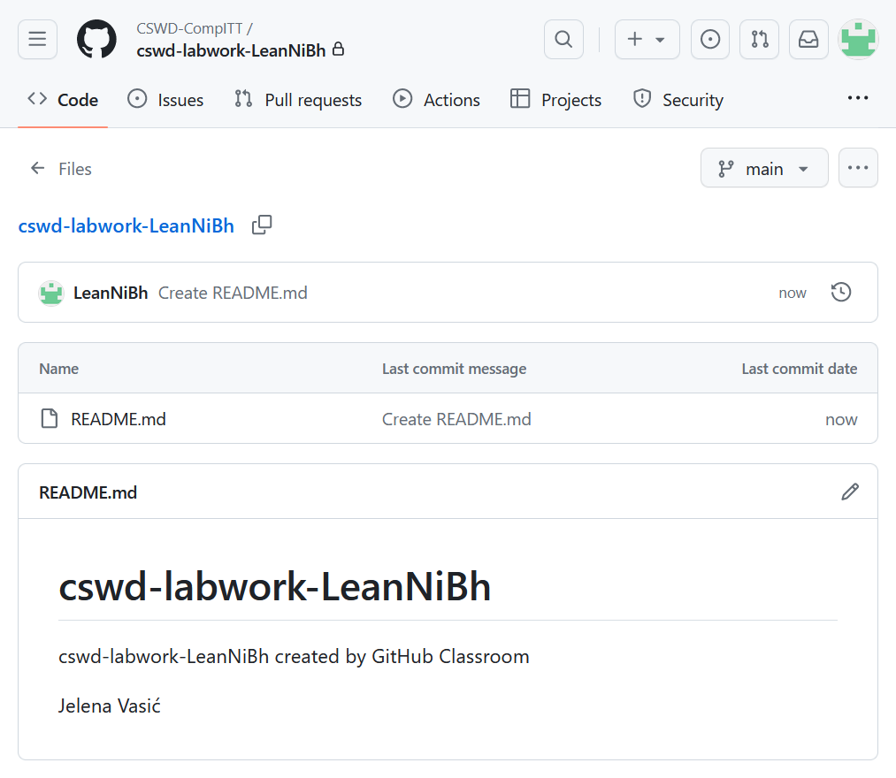

If you see the following page, log into GitHub (if you do not have an account, go back to step 1).

If you see the following page, click "Authorize GitHub Classroom".
On the following page, pick your X-number. If your X-number does not appear on the list, pick one of the ids that starts with xNOIDYET.

When the pop-up shown below appears (it might look a bit different in a different browser), check that the id number is the one you wanted to pick and click 'Ok'.

On the next page click 'Accept this assignment'.

Next you might see the page shown below. Wait for your assignment to be configured. If the page does not change after a minute or two, refresh it (F5).

Now you should see the page shown below. The given URL is the URL of your repository for CSWD labs. Click on the assignment URL (with blue background) to open the repository.

You will see the following page telling you how to initialise the repository. Click on 'README' (blue text).

The following page allows you to edit the README file before saving. Type in your real name here if your GitHub id does not identify you. Click 'Commit changes'.

A dialogue window pops up, allowing you to specify commit comments. You can use the default. Click 'Commit changes'.

The next page shows your initialised repository. You will keep all your CSWD lab work here and I, the lecturer, can see it. You can bookmark this page for easier access in the future.
